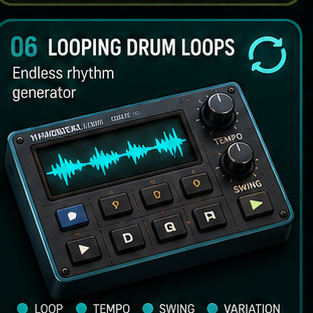
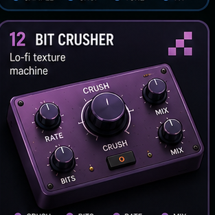
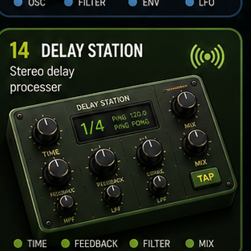
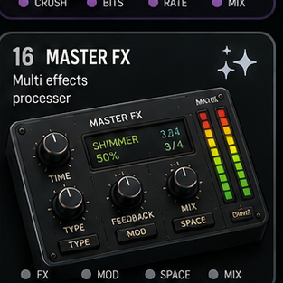

BearGrid Machines
Pick a tile. It opens that machine. The machine page now owns its behavior: drum pads hit like drums, Kaossilator acts like an XY synth, Choppa slices/stutters, Sampla loads one-shots, FX pages process sound, and synth pages actually synth.

01 · Drum Machine
Classic beat production
02 · Kaossilator Pro
Touchpad synth & effects
03 · OP-1
Portable synth & sampler
04 · Orchid
Generative chord engine
05 · Reese
Bass synth engine
06 · Looping Drum Loops
Loop and rhythm launcher
07 · The Choppa
Sample slicer & stutter
08 · Sampla
Portable sampler
09 · Launcha
Sample & clip launcher
10 · Mono Station
Analog-style mono synth
11 · Mellotron
Tape sample player
12 · Bit Crusher
Lo-fi texture machine
13 · FM Station
FM synth engine
14 · Delay Station
Delay processor
15 · Filter Station
Multi-mode filter